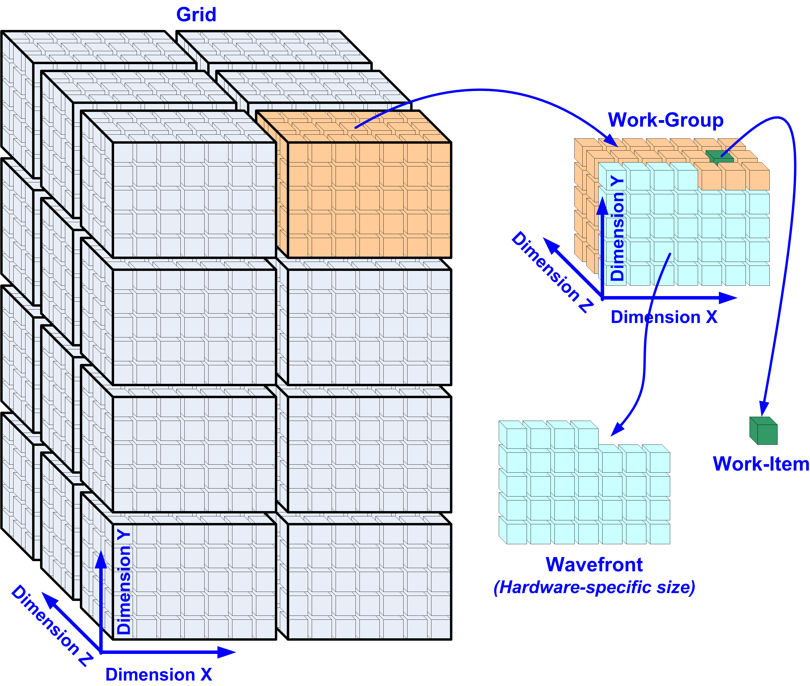
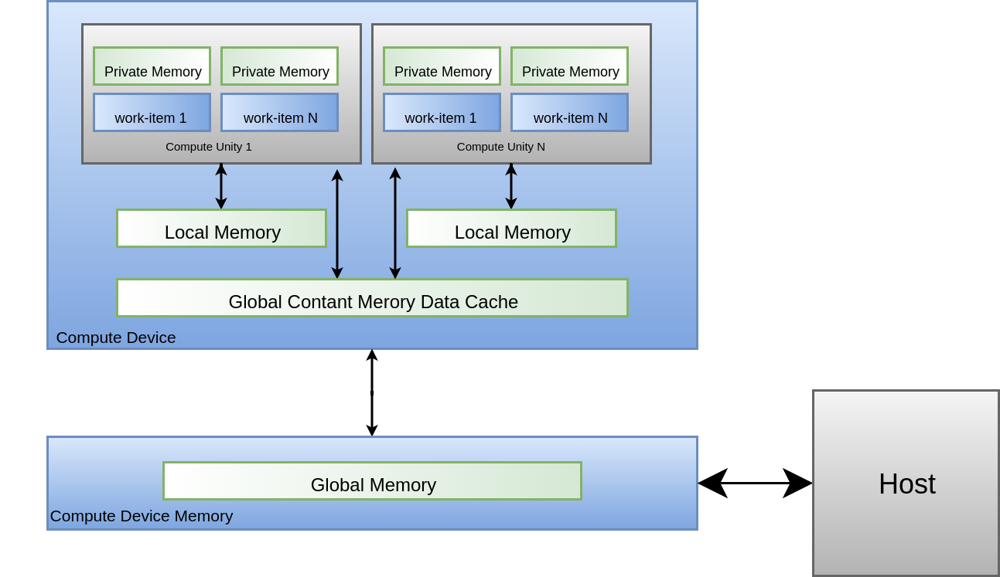
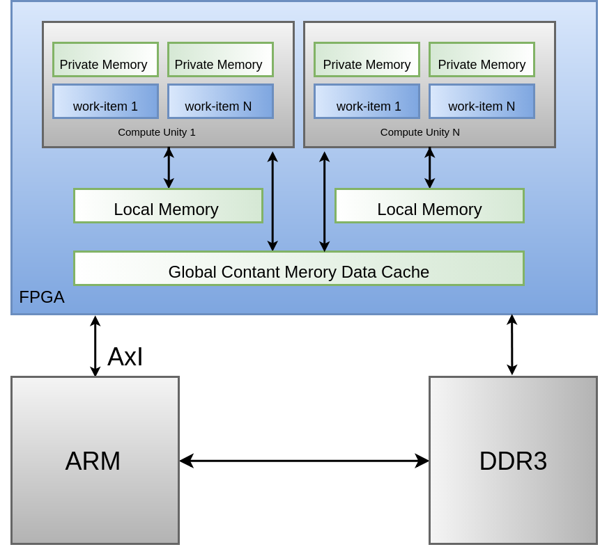
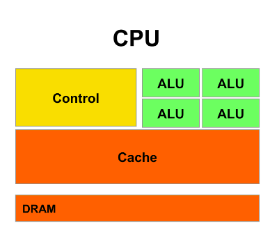

OpenCL¶
- Aluno: Leonardo Medeiros
- Curso: Engenharia da Computação
- Semestre: 9
- Contato:
- Link tutorial oficial: https://github.com/Leotayner/Tutorial-OpenCL
- Ano: 2019
Hardware utilizado no tutorial
- DE10-Standard
OpenCL¶
OpenCL (Open Computing Language) é uma API de baixo nível para programação de alto desempenho em ambientes computacionais heterogêneos compostos por CPUs, GPUs, e outros processadores paralelos como FPGA, permitindo desenvolver aplicações portáveis e eficientes.
Arquitetura OpenCL¶
O padrão OpenCL propõe uma arquitetura em que há um host que agrega um ou mais devices, cada device possui unidades de computação que contém elementos de processamento.
O host é responsável pelo reconhecimento e inicialização dos dispositivos, bem como pela transferência de dados e tarefas para execução.
O device é responsável por processar todos esses dados ao executar as tarefas programadas.
Na arquitetura do device, considerando o contexto de programação paralela, o equivalente a uma thread é o work-item, que representa a menor unidade de tarefa. Esses works-itens são agrupados em blocos denominados work-group, onde os works-itens de um mesmo bloco podem se comunicar e se sincronizar
Os work-groups por sua vez são organizados em grids, onde deverão ter a mesma dimensão, podendo a grid ser unidimensional, bidimensional ou tridimensional.
 Figura 1 - Arquitetura OpenCL
{kind=link}
De forma geral essa estrutura possui três tipos de memórias:
-
Private Memory Estritamente atrelada ao seu respectivo worker, apenas seu worker pode acessa-la
-
Local memory Estritamente atrelada ao seu respectivo bloco, todos os workers dentro do bloco podem acessá-la
-
Global Constant Memory data Cache Cache da memoria global do device, todos os blocos podem acessa-la
-
Global Constant Memory memoria global do device
 Figura 1 - Arquitetura OpenCL
{kind=link}
FPGA vs CPU¶
A arquitetura de funcionamento de acessos de memória e configuração do programa na estrutura OpenCL é um pouco diferente da estrutura geral apresentada anteriormente, a única diferença é que a memória do host e do device estão contidas no mesmo dispositivo, consequentemente o tempo de transferência dos dados entre Host e o device é muito menor, nessa estrutura o ARM é responsável por programar a FPGA através do barramento AxI, e transmitir dados para a memória global DDR3, da qual a FPGA faz uso para executar suas tarefas como device.
Ao analisar os ganhos ao utilizar o OpenCL em FPGA, além da vantagem do baixo tempo de transferência de dados citado anteriormente, também há as vantagens características desse processador, como flexibilidade de hardware e sua quantidade massiva de cores.

Figura 2 - Arquitetura OpenCL-FPGA
{kind=link}
Enquanto que a estrutura em CPU, possui uma quantidade reduzida de cores com unidades aritméticas potentes para reduzir latência de operações.

Figura 4 - Arquitetura CPU
{kind=link}
Logo a estrutura em FPGA apresenta maior desempenho comparada a CPU para programas paralelos, devido a seu grande número de cores e baixo tempo de transferência de dados, enquanto a CPU apresenta maior desempenho que a fpga para programas sequenciais, devido a suas unidades aritméticas potentes.
Tutorial OpenCL-DE-10¶
1. Requerimentos de Sistema¶
- Placa Terasic DE10-Standard
- Cartão microSD com ao menos 4GB
- Leitor de cartão microSD
- Cabo USB (tipo A para mini-B)
- Host PC com
- Porta USB
- 64-bit Windows 7 ou Linux ( este tutorial utiliza linux)
- 32GB de memoria é recomendado
- PuTTY ou Minicom(Linux) utility
- Intel Quartus Prime v18.1 instalado com licença valida
- Intel OpenCL v18.1 instalado com licença valida
- Intel SoC EDS v18.1 instalado
2. Configurando a Infra Estrutura¶
Essa etapa descreve como configurar o ambiente de desenvolvimento do OpenCL no Padrão DE10-Standard.
2.1 Instalação de Software¶
É necessário instalar os seguintes softwares:
Após a instalação do Quartus Prime e do OpenCL SDK, crie uma pasta com o nome terasic, a qual deve conter a pasta DE10-Standard-Opencl. A pasta criada deve estar no diretório board:
/intelFPGA/18.1/hld/board
2.2 Instalação da Licensa Opencl¶
É necessária uma licença OpenCL para o Intel OpenCL SDK compilar o projeto. Em posse da licença é necessário criar uma variável de ambiente LM_LICENSE_FILE com a atribuição do diretório da licença.
2.3 Configurando variaveis de ambiente¶
As seguintes variáveis de ambiente devem ser configuradas para o funcionamento do projeto, isso pode ser feito adicionando as variáveis a seguir ao arquivo .bash-rc (configuração permanente), ou em um arquivo.sh (configuração temporaria, utilizar $source arquivo.sh para ativar o ambiente).
echo Opencl 18.1
export LOCAL= /media/leonardo
export QUARTUS_ROOTDIR=$LOCAL/FPGA/intelFPGA/18.1/quartus
export ALTERAOCLSDKROOT=$LOCAL/FPGA/intelFPGA/18.1/hld
export PATH=$PATH:$QUARTUS_ROOTDIR/bin:$LOCAL/FPGA/intelFPGA/18.1/embedded/ds-5/bin:$LOCAL/FPGA/intelFPGA/18.1/embedded/ds-5/sw/gcc/bin:$ALTERAOCLSDKROOT/bin:$ALTERAOCLSDKROOT/linux64/bin:
export LD_LIBRARY_PATH=$ALTERAOCLSDKROOT/linux64/lib
export AOCL_BOARD_PACKAGE_ROOT=$ALTERAOCLSDKROOT/board/terasic/de10_standard
export QUARTUS_64BIT=1
export LM_LICENSE_FILE="/home/leonardo/Downloads/1-R3OQLF_License.dat"
export INTELFPGAOCLSDKROOT=$LOCAL/FPGA/intelFPGA/18.1/hld
2.3 Verificação do Ambiente¶
Esta seção mostra como verificar se o ambiente OpenCL está configurado corretamente.
- Verificar Versão
$ aocl version
aocl 18.1.0.625 (Intel(R) FPGA SDK for OpenCL(TM), Version 18.1.0 Build 625 Standard Edition, Copyright (C) 2018 Intel Corporation)
- Verificar placa de destino
$ aoc -list-boards Board list: de10_standard_sharedonly``` Board Package: /media/leonardo/FPGA/intelFPGA/18.1/hld/board/terasic/de10_standard
3. Compilar Projeto¶
Esta seção mostra como compilar o kernel e o programa host do OpenCL, necessários para executar um programa em OpenCL.
-
Compilar Kernel
-
$ cd /media/leonardo/FPGA/intelFPGA/18.1/hld/board/terasic/de10_standard/test/vector_add_2 -
$ aoc device/vector_add.cl -o bin/vector_add.aocx --sw-dimm-partition -board=de10_standard_sharedonly -report -
Um arquivo
.aocxserá gerado, este é utilizado para a configuração dos kernels programados, configurando a execução de tarefas e troca de informações entre FPGA e sistema host.
-
Warning
A copilação do kernel é muito lenta, pode levar horas.
-
Compilar Programa Host
-
$ cd /media/leonardo/FPGA/intelFPGA/18.1/embedded -
$ embedded_command_shell.sh -
$ cd /media/leonardo/FPGA/intelFPGA/18.1/hld/board/terasic/de10_standard/test/vector_add_2 -
$ make -
Um arquivo host será gerado, esse arquivo é basicamente o .o usual de uma compilação do GCC, arquivo intermediário que será utilizado em estágios de execução.
-
Se ao executar o comando make ocorrer erros de include na biblioteca Cl adicione o parâmetro
../../../../../host/include/aoINC_DIRSno arquivo makefile
-
4. Embarcar Kernel¶
Utilizaremos uma imagem .iso já gerada com as especificações e que já possui todo o sistema necessário para executar o linux com OpenCL.
Através da pasta DE10_standard_opencl extraia o arquivo de10_standard_opencl.img, esse arquivo é uma cópia bit a bit do que deve ser salvo no SDCard.
Quando inserirmos um disco externo no linux o mesmo o associa a um 'device' na pasta '/dev/', para sabermos qual o nome do device que foi atribuído ao SDcard, podemos usar o comando dmesg, que exibe o log do sistema operacional e nele podemos ver qual foi o último hardware detectado e qual device foi atribuído:
$ dmesg | tail
4789.207972] mmc0: new ultra high speed SDR50 SDHC card at address aaaa
[4789.211680] mmcblk0: mmc0:aaaa SL16G 14.8 GiB
[ 4789.215857] mmcblk0: p1 p2 p3
[ 4988.443942] mmcblk0: p1 p2 p3
Agora vamos salvar a .iso no SDcard.
$ sudo dd bs=1M if=de10_standard_opencl.img of=/dev/sdc conv=fsync status=progress
$ sync
O sync é necessário para que o kernel faça um flush do cache escrevendo realmente no SDCard todos os dados que foram endereçados a ele.
Agora devemos ter duas partições visíveis:
-
524 MiB: FAT32
-
Script de configuração do uboot; Kernel comprimido; Device Tree Blob file
-
u-boot.scr; zImage; socfpga.dtb
-
1 GiB: Filesystem (/)
Os arquivos obtidos na compilação do kernel e host, respectivamente arquivo.ocx e host devem ser colocados na pasta /home/root/ da partição de 1GiB, para serem executadas posteriormente na placa.
5. Ajustar a placa¶
Verifique se o interruptor DIP (SW10) MSEL [4: 0] = 01010.
{kind=link}
5. Conectar-se a placa¶
Com a placa conectada ao USB do computador, para conectar-se ao kernel da sistema, deve-se utilizar o seguinte comando:
$ screen /dev/ttyUSB0 115200,cs8
6. Executar o projeto¶
Dentro do terminal do sistema:
$ source ./init_opencl.sh
$ aocl program /dev/acl0 vector_add.aocx
$ ./host
Análises de Desempenho CPU vs OPENCL¶
Ao comparar o tempo de execução do programa vector_add, que realiza uma simples soma de vetores, entre a CPU e a FPGA foram obtidos os seguintes resultados.
| Size-Vector | CPU | FPGA |
|---|---|---|
| 1000000 | 32.011 | 6.924 |
| 5000000 | 159.805 | 34.278 |
| 10000000 | 304.255 | 68.462 |
| 20000000 | 617.676 | 180.13 |
{kind=link}
Como pode-se observar o desempenho da execução na FPGA é muito maior, embora a diferença numérica seja pequena, deve-se lembrar que o arquivo de teste realiza uma simples operação de soma de vetor, logo para programas mais complexos, o ganho de desempenho na FPGA seria mais expressivo.
Note
O teste da CPU é single thread